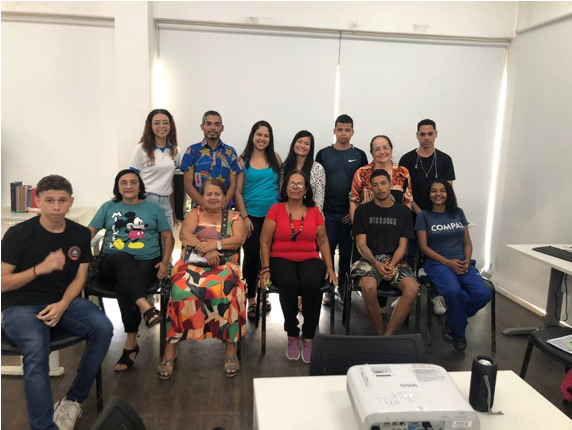
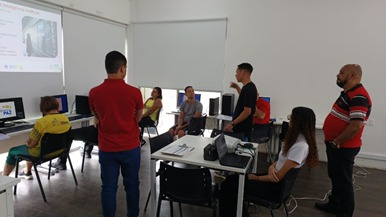
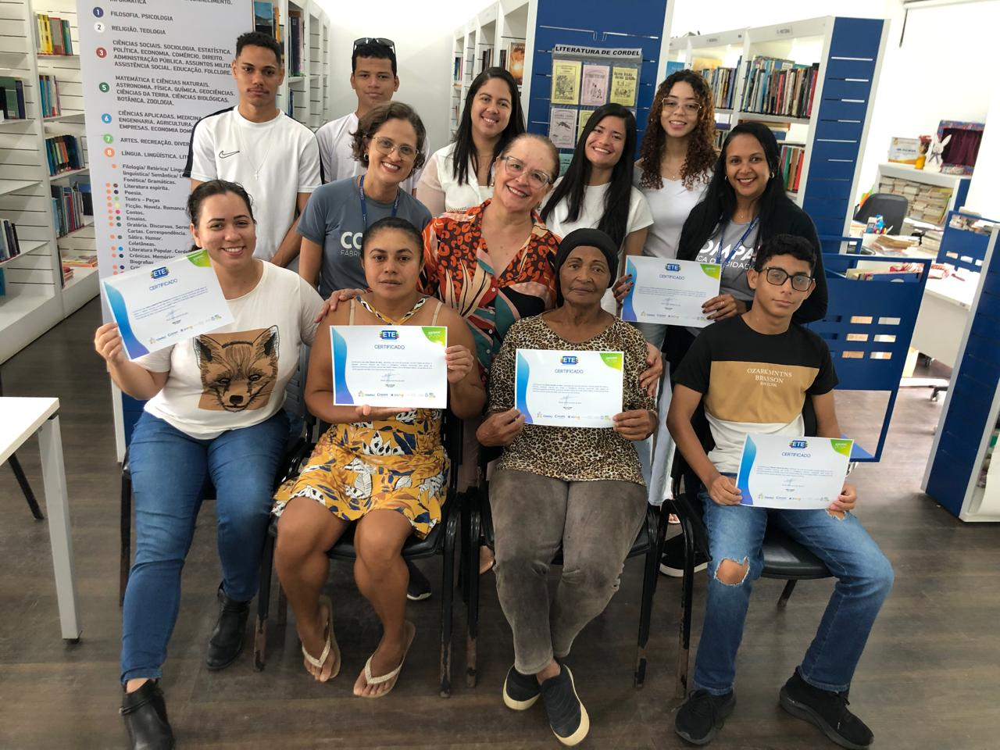

ETEPAC e COMPAZ: União Estratégica e Eficaz
Uma colaboração que uniu conhecimento, empatia e tecnologia — mostrando como a educação técnica pode transformar comunidades inteiras quando aliada à força da cidadania e do serviço público.
Uma Conexão Entre Escola e Comunidade
A ETEPAC e o COMPAZ Miguel Arraes se uniram com o propósito de levar a tecnologia para onde ela é mais necessária: o coração das comunidades. Essa parceria resultou em uma ponte entre o conhecimento técnico e o desenvolvimento humano, promovendo inclusão digital e oportunidades reais de aprendizado.

O Papel do COMPAZ
O COMPAZ Miguel Arraes, referência em cidadania e convivência, foi palco para as atividades do projeto “Aplicabilidade de Ferramentas Digitais”. Com salas equipadas e um ambiente acolhedor, o espaço tornou-se o elo entre os bolsistas da ETEPAC e os moradores, que puderam vivenciar a tecnologia como instrumento de transformação.

Planejamento e Logística
Antes do início das aulas, a coordenação da ETEPAC realizou duas visitas técnicas ao COMPAZ para verificar a estrutura, alinhar cronogramas e planejar a execução. Cada detalhe foi pensado: desde os horários das turmas até a melhor forma de adaptar o conteúdo ao público local.
- Verificação dos laboratórios e equipamentos;
- Reuniões com a coordenação do COMPAZ;
- Organização do processo de inscrição;
- Planejamento das turmas e cronograma de aulas.
Impacto e Transformação Social
O projeto não se limitou ao ensino técnico — ele despertou nos participantes o sentimento de pertencimento e autoconfiança. Jovens e adultos descobriram o poder da tecnologia aplicada à vida real: desde criar um currículo até compreender o funcionamento das redes digitais.
Envolvimento dos Bolsistas
A equipe de bolsistas da ETEPAC foi essencial para o sucesso do projeto. Eles aplicaram seus conhecimentos técnicos, aprimoraram habilidades de comunicação e vivenciaram a prática da docência. O aprendizado foi mútuo: enquanto ensinavam, também se transformavam.
Legado e Continuidade
A parceria entre a ETEPAC e o COMPAZ deixou um legado duradouro. O projeto ampliou horizontes, abriu caminhos e demonstrou que a inclusão digital é, acima de tudo, uma ferramenta de transformação social.
Essa união inspira novas ações de extensão, reforçando a importância da colaboração entre instituições educacionais e espaços públicos.
Conclusão
A experiência da parceria entre a ETEPAC e o COMPAZ Miguel Arraes prova que quando a educação técnica encontra o compromisso social, o resultado é uma sociedade mais justa, consciente e conectada. Uma verdadeira união entre conhecimento, empatia e propósito.
